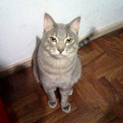

How to tell stories with sensors?
-
Rudi
-

Tincho
-
Iván
Data, on its own, locked up or muddled with errors, does little good. Cleaned up, structured, analyzed and layered into stories, data can enhance our understanding of the most basic questions about our world, helping journalists to explain who, what, where, how and why changes are happening.
3 stories with sensors
1st Story
How can we predict their arrival?
It's being told that the cicadas appears only when it's 17 Celsius degrees(64 Fahrenheit) at 8 centimeters (3.14 inches) of the ground.
2nd Story
6100 guests
100 rooms
65 square meters ⊃
3rd Story
Why now?
Fast prototyping
Low Cost
Big community
Participatory